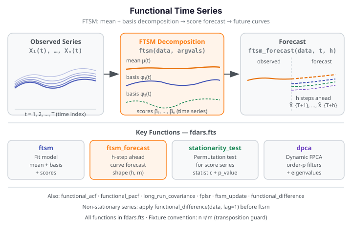

Functional Time Series¶
Functional time series (FTS) treat a sequence of curves — each observed at one point in
time — as realizations of a stochastic process indexed by time. The fdars.fts submodule
provides a full toolkit: score-based forecasting (FTSM, FPLSR), stationarity testing,
autocorrelation structure (functional ACF/PACF), long-run covariance estimation, and
frequency-domain decomposition (spectral density, DPCA).
| Method | fdars function |
Key output |
|---|---|---|
| FTSM fit & forecast | ftsm, ftsm_forecast |
scores, fitted, ar_models, forecast |
| Multi-step forecast | ftsm_forecast_multistep |
forecast (h, m) |
| Online update | ftsm_update |
updated 7-key dict |
| PLS one-step forecast | fplsr |
forecast (1, m), fitted (n-1, m) |
| Autocorrelation | functional_acf, functional_pacf |
lags, acf, pacf, upper_band |
| Spectral density | spectral_density |
freqs, re, im (all Fourier frequencies) |
| Dynamic PCA | dpca, dpca_reconstruct |
filters, scores, eigenvalues |
| Stationarity test | stationarity_test |
statistic, p_value |
| Long-run covariance | long_run_covariance |
cov_matrix (m, m) |

When to use¶
FTSM (Functional Time Series Model) is the default choice for curve forecasting. It decomposes each observed curve into a mean function plus \(K\) functional principal components, then models the scalar score trajectories as a multivariate time series to produce forecasts for future curves. Start with FTSM when you want to forecast the next \(h\) curves from a time-ordered collection.
FPLSR (Functional Partial Least Squares Regression) is a compact one-step-ahead alternative that optimises predictive covariance directly instead of fitting AR models to FPCA scores. Prefer it when \(n\) is small or when the FTSM score-AR fit is unstable.
DPCA (Dynamic Functional PCA) works in the frequency domain. Rather than decomposing contemporaneous variance (like FTSM), DPCA decomposes the entire spectral structure of the process, capturing lagged cross-curve dependence that FTSM misses. Use it when you want to understand which Fourier frequencies drive variation or when scores from FTSM show strong residual autocorrelation.
Stationarity / differencing: Before forecasting, check whether the score series is
stationary with stationarity_test. For a non-stationary series, first-difference the
curves with functional_difference (which is lag-1 only — chain calls to difference
further), model the differenced series, and back-transform forecasts.
Quick rule: Start with ftsm + stationarity_test. If p-value is small, apply
functional_difference before re-fitting. Use functional_acf to diagnose remaining
autocorrelation structure; use dpca when you need a full frequency-domain picture.
Choosing ncomp
ftsm takes ncomp as an input, and its weights array is the (m,) grid
quadrature weights — not per-component variance. To size ncomp, fit with a
generous value and inspect how much variance each component's score series carries
(scores[:, k].var()); keep the smallest ncomp whose cumulative score-variance
fraction reaches 0.85–0.90. Larger ncomp captures more variance but introduces
noisier score-AR fits with fewer observations per component.
FTSM — Functional Time Series Model¶
Theory¶
Let \(X_1(t), X_2(t), \ldots, X_T(t)\) be a sequence of \(T\) observed functional observations indexed by time. FTSM estimates a mean function \(\mu(t)\) and \(K\) orthogonal basis functions \(\phi_1(t), \ldots, \phi_K(t)\) such that:
The scalar score vectors \(\boldsymbol{\beta}_i = (\beta_{i1}, \ldots, \beta_{iK})\) are then modelled as a multivariate time series. Forecasts \(h\) steps ahead are obtained by projecting the predicted scores back through the basis functions:
Fitting and forecasting¶
from fdars.fts import ftsm, ftsm_forecast
fit = ftsm(data, argvals, ncomp=3)
fc = ftsm_forecast(data, argvals, h=5, ncomp=3)
import numpy as np
from fdars.fts import ftsm, ftsm_forecast, stationarity_test
from docs_fig import fast
rng = np.random.default_rng(42)
n, m = 20, 30 # non-square: n != m (transposition guard)
t = np.linspace(0, 1, m)
data = np.array([np.sin(2 * np.pi * t + rng.uniform(0, 0.5)) +
0.1 * rng.standard_normal(m) for _ in range(n)])
fit = ftsm(data, t, ncomp=3)
fc = ftsm_forecast(data, t, h=3, ncomp=3)
st = stationarity_test(data, t, n_perm=fast(999, 19), seed=42)
print(f"ncomp: {fit['ncomp']}")
print(f"ar_models orders: {[m_['order'] for m_ in fit['ar_models']]} (per component)")
print(f"forecast shape: {np.asarray(fc['forecast']).shape}")
print(f"stationarity p: {st['p_value']:.3f}")
print("FDARS_FENCE_OK")
ncomp: 3 ar_models orders: [0, 0, 0] (per component) forecast shape: (3, 30) stationarity p: 0.709 FDARS_FENCE_OK
Parameters — ftsm
| Parameter | Type | Default | Description |
|---|---|---|---|
data |
ndarray (n, m) |
— | Functional observations in time order |
argvals |
ndarray (m,) |
— | Evaluation grid |
ncomp |
int |
3 |
Number of basis components; clamped to min(ncomp, n-1, m) |
Returns — ftsm
| Key | Shape / Type | Description |
|---|---|---|
mean |
(m,) |
Estimated mean function |
rotation |
(m, ncomp) |
Basis (eigenvector) matrix |
scores |
(n, ncomp) |
Score matrix |
fitted |
(n, m) |
Fitted curves |
weights |
(m,) |
Grid quadrature weights over the evaluation grid (not per-component variance) |
ncomp |
int |
Number of components retained |
ar_models |
list[dict] |
Per-component AR model; each dict has keys order (int), phi (ndarray), sigma2 (float) |
Parameters — ftsm_forecast
| Parameter | Type | Default | Description |
|---|---|---|---|
data |
ndarray (n, m) |
— | Historical functional observations |
argvals |
ndarray (m,) |
— | Evaluation grid |
h |
int |
1 |
Forecast horizon |
ncomp |
int |
3 |
Number of components |
Returns — ftsm_forecast
| Key | Shape / Type | Description |
|---|---|---|
forecast |
(h, m) |
Forecast curves, one row per step |
h |
int |
Forecast horizon used |
Parameters — stationarity_test
| Parameter | Type | Default | Description |
|---|---|---|---|
data |
ndarray (n, m) |
— | Functional time series |
argvals |
ndarray (m,) |
— | Evaluation grid |
n_perm |
int |
999 |
Number of permutations for the test |
seed |
int |
42 |
Random seed |
Returns — stationarity_test
| Key | Shape / Type | Description |
|---|---|---|
statistic |
float |
Observed test statistic |
p_value |
float |
Permutation p-value; small values suggest non-stationarity |
n_perm |
int |
Number of permutations used |
Reading ar_models
Each entry in ar_models is a dict for one FPCA component's univariate AR fit:
{'order': 1, 'phi': array([0.83]), 'sigma2': 0.024}. A phi value near ±1
indicates near unit-root behaviour — consider differencing before modelling. The
sigma2 key is the noise variance of the fitted AR process.
FTSM with real data (Canadian weather)¶
import numpy as np
from fdars.fts import ftsm, ftsm_forecast
from docs_data import load_canadian_weather
# load_canadian_weather() returns (day, X, meta) where X is (35, 365)
# Aggregate to 52 weekly means (first 364 days) for build speed
_day, X_full, _meta = load_canadian_weather()
data = X_full[:, :364].reshape(35, 52, 7).mean(axis=2) # (35, 52) — weekly means
t = np.linspace(0, 1, data.shape[1])
fit = ftsm(data, t, ncomp=3)
fc = ftsm_forecast(data, t, h=2, ncomp=3)
print(f"data shape: {data.shape} (stations × weekly means)")
print(f"ftsm ncomp: {fit['ncomp']}")
print(f"weights sum: {np.asarray(fit['weights']).sum():.3f}")
print(f"forecast shape: {np.asarray(fc['forecast']).shape}")
print("FDARS_FENCE_OK")
data shape: (35, 52) (stations × weekly means) ftsm ncomp: 3 weights sum: 1.000 forecast shape: (2, 52) FDARS_FENCE_OK
Subsampling for build speed
The full Canadian weather dataset is 35 × 365 (daily). Aggregating the first 364 days into 52 weekly means (35 × 52) keeps fence time well under one second while preserving the seasonal structure. For production analysis use the full daily resolution.
Functional ACF and PACF¶
Theory¶
The functional autocorrelation function (ACF) measures how much the cross-covariance operator norm between \(X_t\) and \(X_{t-h}\) persists across lag \(h\). A simulation-based 95% upper band provides a significance threshold: lags with ACF above the band indicate meaningful temporal dependence at that lag.
The functional PACF removes the linear contribution of intermediate lags, analogous to the scalar PACF used for AR order selection.
from fdars.fts import functional_acf, functional_pacf
acf = functional_acf(data, argvals, max_lag=8, n_sim=999, ci=0.95, seed=42)
pacf = functional_pacf(data, argvals, max_lag=8, n_sim=999, ci=0.95, seed=42)
import numpy as np
from docs_fig import fig, render, fast
from fdars.fts import functional_acf
rng = np.random.default_rng(42)
n, m = 25, 30
t = np.linspace(0, 1, m)
data = np.array([np.sin(2 * np.pi * t + 0.3 * k / n) + 0.1 * rng.standard_normal(m)
for k in range(n)])
acf = functional_acf(data, t, max_lag=8, n_sim=fast(999, 99), seed=42)
lags = np.asarray(acf["lags"])
acf_vals = np.asarray(acf["acf"])
upper = np.asarray(acf["upper_band"])
f, ax = fig(figsize=(7.0, 3.6))
ax.bar(lags, acf_vals, color="#3f51b5", width=0.6, label="functional ACF")
ax.axhline(upper[0], color="#dc3545", ls="--", lw=1.4, label="95% band")
ax.set(title="Functional ACF of synthetic time series",
xlabel="lag", ylabel="ACF statistic")
ax.legend()
print(render(f))
print("FDARS_FENCE_OK")
Parameters — functional_acf / functional_pacf
| Parameter | Type | Default | Description |
|---|---|---|---|
data |
ndarray (n, m) |
— | Functional time series (time order) |
argvals |
ndarray (m,) |
— | Evaluation grid |
max_lag |
int \| None |
None |
Maximum lag; None auto-selects min(20, N/4) |
n_sim |
int |
999 |
Simulation draws for the upper band |
ci |
float |
0.95 |
Confidence level for the upper band |
seed |
int |
42 |
Random seed |
Returns
| Key | Shape / Type | Description |
|---|---|---|
lags |
(max_lag,) int64 |
Lag values 1, 2, …, max_lag |
acf |
(max_lag,) |
ACF statistic at each lag |
pacf |
(max_lag,) |
PACF statistic at each lag |
upper_band |
(max_lag,) |
Simulation-based 95% significance threshold |
No lags= parameter
functional_acf and functional_pacf take max_lag (keyword), not lags. Passing
lags=8 raises TypeError. The lags key in the returned dict is the array of
lag integers — that is a return key, not an input parameter.
Spectral Density and DPCA¶
Spectral density¶
The spectral density operator \(f(\omega)\) characterises the covariance structure of the
FTS at each Fourier frequency \(\omega\). spectral_density computes the entire spectrum
at once and returns it as a collection of \((m \times m)\) cross-spectral matrices, one per
Fourier frequency.
from fdars.fts import spectral_density
sd = spectral_density(data, argvals, bandwidth=None)
# Access the matrix at the k-th Fourier frequency:
f_k = np.asarray(sd["re"][k]) + 1j * np.asarray(sd["im"][k])
Parameters — spectral_density
| Parameter | Type | Default | Description |
|---|---|---|---|
data |
ndarray (n, m) |
— | Functional time series |
argvals |
ndarray (m,) |
— | Evaluation grid |
bandwidth |
int \| None |
None |
Smoothing bandwidth; None auto-selects ⌊N^{1/3}⌋. 0 raises ValueError. |
Returns
| Key | Shape / Type | Description |
|---|---|---|
freqs |
(N,) |
Fourier frequencies |
re |
list of N arrays (m, m) |
Real part of the spectral density matrix at each frequency |
im |
list of N arrays (m, m) |
Imaginary part |
m |
int |
Grid size |
n_curves |
int |
Number of curves |
bandwidth |
int |
Bandwidth used |
Spectral density returns ALL frequencies
Unlike the R far package's per-frequency evaluation, spectral_density computes
the full spectrum and returns it as freqs, re, and im lists. To get the
cross-spectral matrix at a specific frequency index k, use
np.asarray(sd["re"][k]) + 1j * np.asarray(sd["im"][k]).
Stack all into a 3D array with np.stack(sd["re"]) → (N, m, m).
Dynamic PCA¶
Dynamic functional PCA (DPCA) extends standard FPCA to capture lagged cross-curve dependence by working directly in the spectral domain. DPCA computes dynamic principal filters — linear time-invariant filters that extract the dominant sources of variation across the full frequency range.
from fdars.fts import dpca, dpca_reconstruct
result = dpca(data, argvals, ncomp=3, bandwidth=None, filter_lag=None)
full = dpca_reconstruct(data, argvals, ncomp=3, bandwidth=None, filter_lag=None)
Parameters — dpca / dpca_reconstruct
| Parameter | Type | Default | Description |
|---|---|---|---|
data |
ndarray (n, m) |
— | Functional time series |
argvals |
ndarray (m,) |
— | Evaluation grid |
ncomp |
int |
3 |
Number of dynamic components |
bandwidth |
int \| None |
None |
Spectral smoothing bandwidth; None auto-selects |
filter_lag |
int \| None |
None |
One-sided filter half-length; None auto-selects |
Returns — dpca
| Key | Shape / Type | Description |
|---|---|---|
filters |
list of ncomp arrays (2L+1, m) |
Dynamic principal filters |
scores |
(N-2L, ncomp) |
Dynamic PC scores (valid range only) |
eigenvalues |
list of ncomp arrays (N,) |
Dynamic eigenvalue spectrum per component |
n_freqs |
int |
Number of Fourier frequencies |
filter_lag |
int |
Filter half-length L used |
ncomp |
int |
Components retained |
valid_range |
tuple(int, int) |
First and last valid score index (boundary trim) |
Returns — dpca_reconstruct (all dpca keys plus):
| Key | Shape / Type | Description |
|---|---|---|
fitted_reconstruction |
(N-2L, m) |
Reconstructed curves in the valid range |
reconstruction_error |
(ncomp,) |
Per-component reconstruction error |
No order= parameter in dpca
dpca does not have an order parameter. The temporal filter length is
controlled by filter_lag (which defaults to auto-selection). Passing order=1
raises TypeError.
Long-Run Covariance¶
The long-run covariance operator accounts for temporal dependence beyond the contemporaneous sample covariance. It is defined as the sum of all lagged covariance operators:
In practice, the sum is truncated at a bandwidth \(b\) using a flat-top kernel.
Parameters
| Parameter | Type | Default | Description |
|---|---|---|---|
data |
ndarray (n, m) |
— | Functional time series |
argvals |
ndarray (m,) |
— | Evaluation grid |
bandwidth |
int \| None |
None |
Truncation bandwidth; None auto-selects ⌊N^{1/3}⌋; 0 returns sample covariance |
Returns
| Key | Shape / Type | Description |
|---|---|---|
cov_matrix |
(m, m) |
Long-run covariance matrix on the grid |
m |
int |
Grid size |
bandwidth |
int |
Bandwidth used |
n_curves |
int |
Number of curves |
Default bandwidth is None, not 1.0
long_run_covariance(data, argvals) uses bandwidth=None, which triggers
automatic bandwidth selection at ⌊N^{1/3}⌋ (about 2–3 for typical FTS lengths).
Setting bandwidth=0 returns the sample covariance \(\mathbf{C}_0\) only.
Additional Functions¶
| Function | Signature | Description |
|---|---|---|
ftsm_forecast_multistep |
(data, argvals, h=5, ncomp=3) |
Multi-step forecast; at h=1 identical to ftsm_forecast |
ftsm_update |
(data, new_curve, argvals, ncomp=3) |
Online update: incorporate new observations without full refit |
fplsr |
(data, argvals, ncomp=3) |
Functional PLS one-step-ahead forecast; returns forecast (1, m), fitted (n-1, m), ncomp |
functional_difference |
(data) |
Lag-1 difference: returns (n-1, m) array (no argvals argument; lag fixed at 1) |
stationarity_test |
(data, argvals, n_perm=999, seed=42) |
Permutation stationarity test |
ftsm_update argument order: new_curve is second
The correct signature is ftsm_update(data, new_curve, argvals, ncomp=3) — the new
observation matrix new_curve is the second positional argument, before
argvals. new_curve must be a 2D array of shape (k_new, m) where k_new is the
number of new curves to incorporate. Placing argvals second will cause a shape
error or silently produce wrong results.
Parameter Selection and Result Interpretation¶
Choosing ncomp¶
ftsm takes ncomp as an input and returns scores (n, ncomp) — the score time series
for each functional principal component. The weights (m,) array is the grid quadrature
weights, not per-component variance. Size ncomp from the score variances: fit with a
generous ncomp, then keep the smallest count whose cumulative score-variance fraction
exceeds 0.85–0.90:
scores = np.asarray(fit["scores"]) # (n, ncomp)
comp_var = scores.var(axis=0) # variance carried by each component
fve = comp_var / comp_var.sum()
ncomp_choice = int(np.argmax(np.cumsum(fve) >= 0.90)) + 1
For DPCA, the eigenvalues are per-component spectral eigenvalue functions (each
(N,)) rather than scalar fractions. A component is important if its eigenvalue function
peaks noticeably above the baseline at any frequency.
Choosing max_lag for ACF/PACF¶
max_lag=None auto-selects min(20, N/4), which is conservative for most series.
Start with the default. If ACF bars are all below the upper_band threshold at all lags,
the series is consistent with a white-noise FTS. If the PACF cuts off at lag \(p\) but the
ACF decays slowly, an AR(\(p\)) model on the scores is appropriate.
Interpreting the upper_band¶
upper_band is the simulation-based 95% quantile of the ACF statistic under the null of
no autocorrelation. Lags with acf_vals > upper_band are statistically significant.
Because the band is simulation-based (not analytical), it may vary slightly across seeds;
use a large n_sim (≥ 999) for production analysis.
When the series is non-stationary¶
If stationarity_test returns a small p-value, difference the series before modelling:
from fdars.fts import functional_difference
# functional_difference takes only `data` — no argvals argument, lag fixed at 1
diff_data = functional_difference(data) # shape (n-1, m)
# For lag-2 differencing, chain calls:
diff2_data = functional_difference(functional_difference(data)) # shape (n-2, m)
Methods available in R but not yet in Python¶
- Functional cointegration testing — testing for long-run equilibrium relationships
between multiple FTS is not exposed in
fdars.fts. - Hilbert-space AR(p) beyond auto-selection —
ftsmauto-selects the AR order per component; fitting a constrained AR(p) with a user-specified common order across all components is not directly available. - Lag-\(k\) differencing with \(k > 1\) as a single call —
functional_differenceis lag-1 only. Higher-order differencing requires chaining calls.
See also¶
- Seasonal Analysis — periodic decomposition as a complement to FTS forecasting
- Functional Statistics — mean, covariance, and variance functions used inside FTSM
- Clustering — grouping observations by their FTSM score trajectories
- Analyze index
References¶
- Hyndman, R. J. and Ullah, M. S. (2007). Robust forecasting of mortality and fertility rates: A functional data approach. Computational Statistics & Data Analysis 51(10), 4942–4956.
- Aue, A., Norinho, D. D. and Hörmann, S. (2015). On the prediction of stationary functional time series. Journal of the American Statistical Association 110(509), 378–392.
- Hörmann, S. and Kokoszka, P. (2010). Weakly dependent functional data. Annals of Statistics 38(3), 1845–1884.